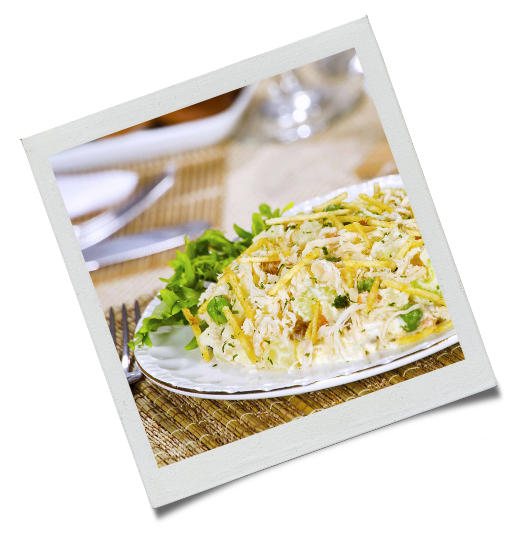

500 g de peito de frango
 cozido e desfiado
cozido e desfiado2 cenouras grandes raladas
1 lata de ervilha
1 lata de milho verde
200 g de uva passa
1 maçã
Maionese
Cheiro-verde
Batata palha

Misture todos os ingredientes;
Coloque em um refratário e forre com a batata palha;
Deixe gelar e sirva.